Jennifer's Favorite Moments In Barbie History
1950's
Ruth Handler
Creator of Barbie
Ruth Handler cofounded Mattel with her husband Elliot. She noticed that there were many toys for boys, but not many for girls. On a trip to Germany, Ruth found the Bild Lili doll which inspired her to create Barbie.
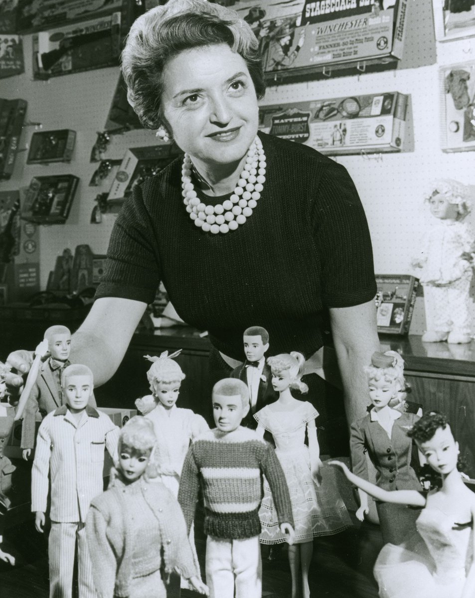1959
Barbie Debuts
Barbie debuted on March 9, 1959 at the New York Toy Fair. She wore a black and white stiped swimsuit and had her hair in a ponytail. This doll is refered to as Ponytail Barbie #1.
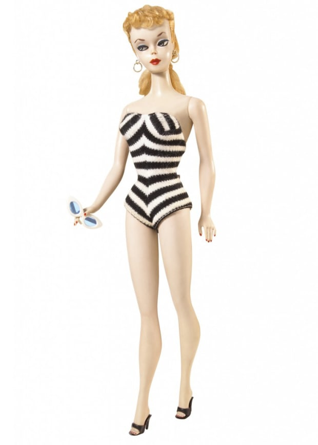1960's
1961
Ken Debuts
Ken debuted on March 11, 1961 at the American International Toy Fair. He was introduced as Barbie's boyfriend, was 12 inches tall, and wore red bathing suit trunks. Ken was named after Ruth Handler's son, Kenneth.
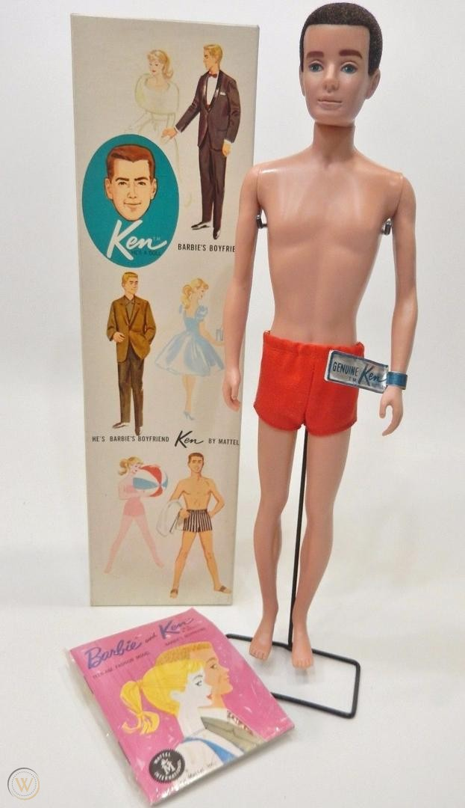1967
First Celebrity Doll
The first celebrity doll was British fashion model Twiggy. This is an important moment in Barbie history, since it marks the begining of the brand's status in pop culture.
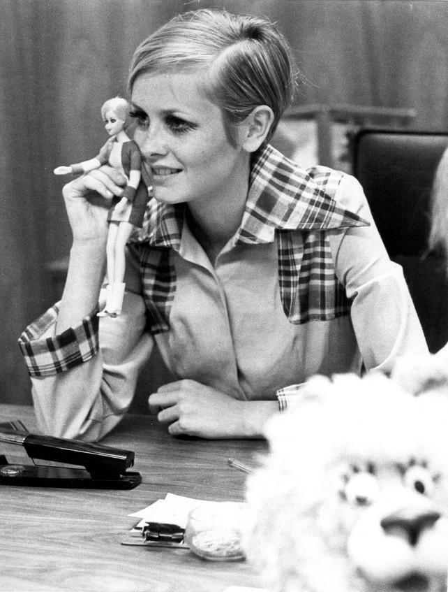1970's
1971
Malibu Barbie
The 1970's hold the most iconic dolls in Barbie history. Malibu Barbie was the first major change to the doll. For the first time in over ten years, Barbie had a new face. Instead of a cold side-eye, Malibu Barbie looked straight forward and smiled!
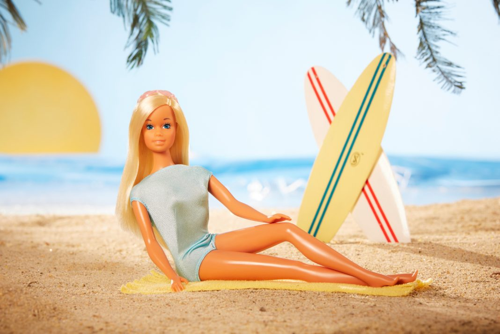1977
Superstar Barbie
Another iconic doll is 1977's Superstar Barbie. She wore an incredible hot pink, satin gown. Although on the outside she doesn't seem too special, Superstar Barbie perfectly represents the brand's glamour and elegance.
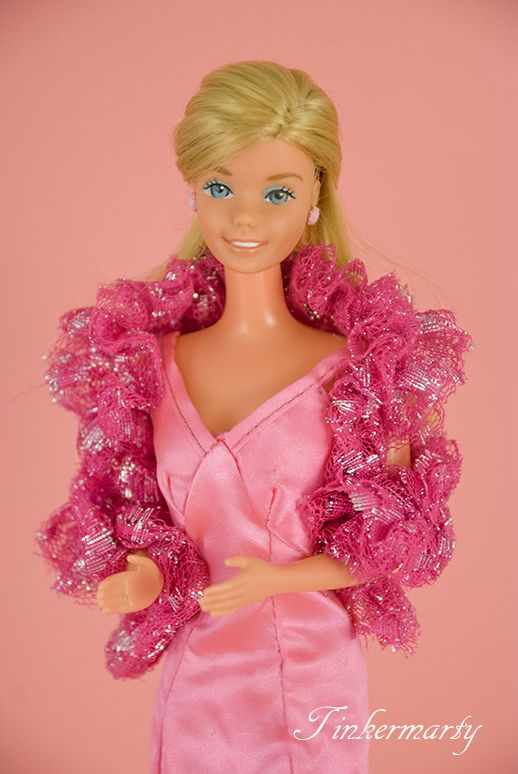1980's
1985
"We Girls Can Do Anything" Campaign
Barbie launched the We Girls Can Do Anything Campaign in 1985. It was the begining of a lifetime of encouraging girls to believe in themselves.
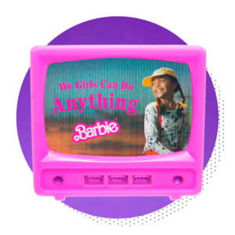1986
Andy Warhol Paints Barbie
Andy Warhol's 1986 painting of a Barbie signified the brand's importance in pop culture. It elevated Barbie's status to an icon and immortalized her fame.
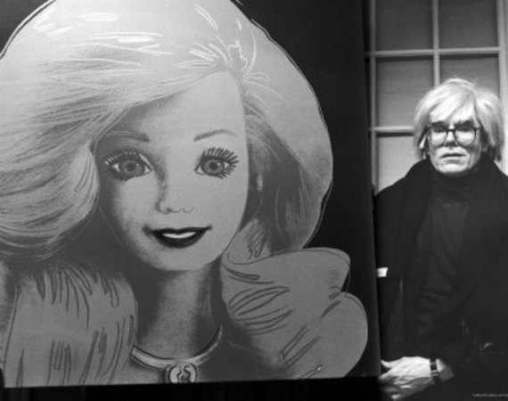1990's
1992
Barbie Runs For President
Barbie first started running for president during the 1992 elections. She has been running for president in every election year since! This signifies the progress made by the brand since it's founding.
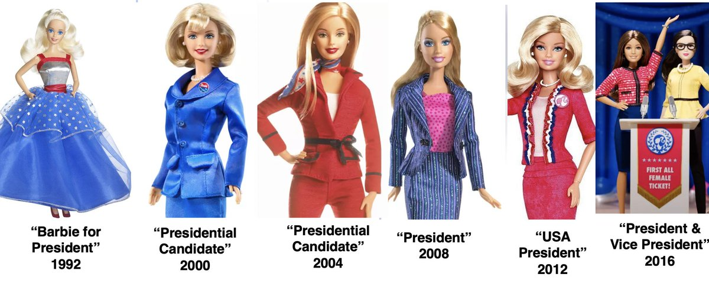1992
Totally Hair Barbie
1992 was a big year for Barbie and her hair! Totally Hair Barbie is the best-selling Barbie doll to date. She had hair down to her ankles which is the longest hair ever on a doll.
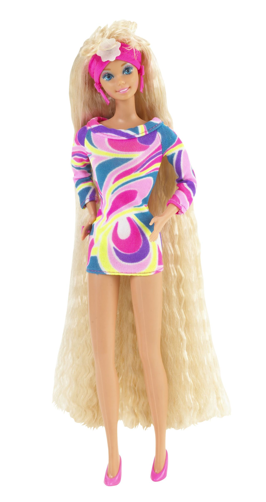2000's
2001
Barbie's First Feature Length Film
Barbie's first feature length film was "Barbie in the Nutcracker". This sparked decades of iconic films such as my personal favorites, "Barbie as Princess and the Pauper" (2004) and "Barbie in the 12 Dancing Princesses" (2006).
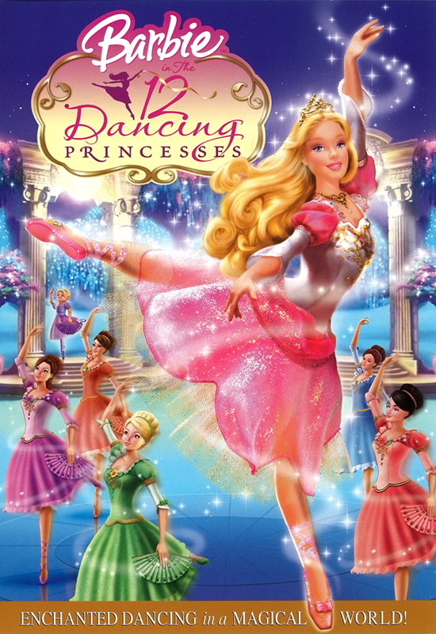2002
Pregnant Midge
This is my favorite controversial doll in the series. The Happy Family doll, commonly refered to as "Pregnant Midge", was released in 2002 and sparked much controversy. Because the doll was packaged alone and without family members, parents complained the doll sent the wrong message.
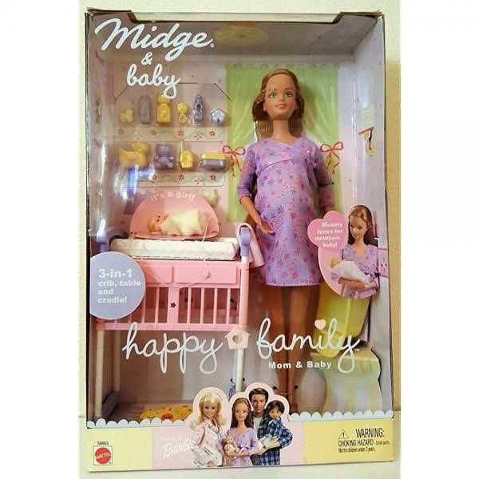2010's
2010
Barbie Becomes a Computer Engineer
One of my favorite dolls is 2010's Computer Engineer Barbie. This is a very special doll for me because I too am a woman in STEM! Female engineers from the Society of Women Engineers and National academy of Engineering were consulted on her wardrobe and work. I appreciate the feminine details such as her pink laptop and phone, pink wedges, and her t-shirt which has "Barbie" spelled in binary code.
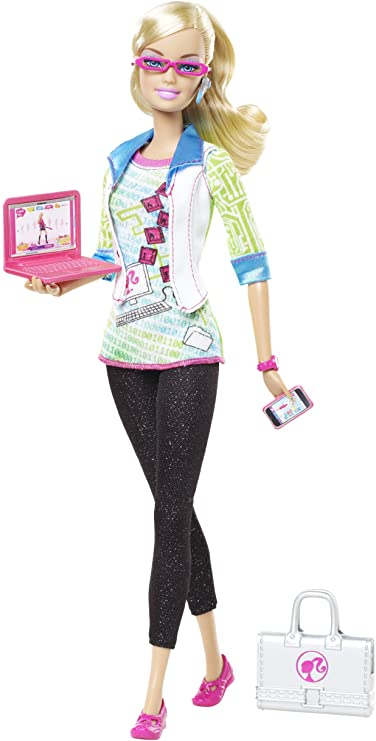2016
Barbie Introduces new body types
In 2016 Barbie introduced three new body types: curvy, petite, and tall. After much backlash concerning Barbie's thin body, Mattel decided to launch the new bodies to promote body positivity. This change landed Barbie on the cover of TIME Magazine!
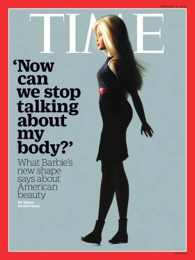